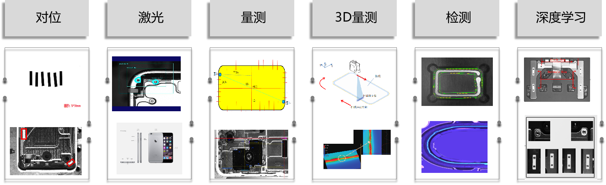

Tổng quan sản phẩm
Tổng quan sản phẩm
Phần mềm thị giác thông minh trực quan VISIONAssembly cho phép xử lý hình ảnh, tạo mô hình, giao tiếp, lưu trữ… mà không cần lập trình, giúp nhanh chóng xây dựng hệ thống thị giác cấu hình cao, hiệu năng tốt, dễ dàng đáp ứng nhu cầu khách hàng, ứng dụng rộng rãi trong các ngành sản xuất tiên tiến như điện tử tiêu dùng, màn hình mới, pin lithium, quang điện, v.v.
- Khả năng tạo mô hình trực quan mạnh mẽ: Sử dụng sơ đồ luồng làm nền tảng logic để thiết kế các quy trình xử lý thị giác máy phức tạp;
- Công cụ thuật toán thị giác phong phú: Cung cấp hàng trăm công cụ xử lý hình ảnh như định vị, kiểm tra, đo lường, hiệu chuẩn, canh chỉnh, nhận dạng, 3D, học sâu, v.v.;
- Trải nghiệm tương tác thân thiện: Hỗ trợ kéo thả hoặc theo menu để tạo công cụ, cho phép sao chép-dán nhiều công cụ, di chuyển nhóm công cụ linh hoạt;
- Thành phần giao diện đa dạng: Hỗ trợ người dùng tự định nghĩa giao diện, có thể thêm các thành phần tùy chỉnh như ô nhập, hộp văn bản, nút tùy chỉnh, nút chọn, hộp chọn, vùng ảnh, vùng hiển thị, cửa sổ xem, nút chức năng, danh sách, v.v.;
- Chức năng giám sát chất lượng toàn diện: Hỗ trợ thu thập, lưu trữ và hiển thị dữ liệu; hiển thị nhiều dạng biểu đồ, hỗ trợ thống kê dữ liệu trực tuyến và xuất báo cáo;
- Giao tiếp phần cứng phong phú: Hỗ trợ các dòng máy ảnh công nghiệp phổ biến như Teledyne DALSA, LBAS, và giao thức tiêu chuẩn GigEVision;
- Giao tiếp qua cổng COM/cổng mạng: Hỗ trợ các giao thức công nghiệp phổ biến như Modbus, MXComponent, Mewtocol, KeyenceSWLU, HostlinkFINS để dễ dàng tích hợp với hệ thống điều khiển tự động.
Tình huống ứng dụng
Sản phẩm này được ứng dụng rộng rãi trong các tình huống như canh chỉnh, laser, đo lường, đo 3D, kiểm tra, học sâu, v.v.

Tuyên bố
- Trong phạm vi pháp luật cho phép lớn nhất, tài liệu này và sản phẩm được mô tả (bao gồm phần cứng, phần mềm, firmware…) được cung cấp “nguyên trạng”, có thể tồn tại lỗi, khuyết điểm hoặc sự cố. Chúng tôi không bảo đảm rõ ràng hay ngầm định về tính thương mại, sự hài lòng về chất lượng, tính phù hợp cho mục đích cụ thể, hay không vi phạm quyền của bên thứ ba; đồng thời cũng không chịu trách nhiệm cho bất kỳ tổn thất đặc biệt, ngẫu nhiên, gián tiếp nào do việc sử dụng sản phẩm hoặc tài liệu, bao gồm nhưng không giới hạn ở mất lợi nhuận kinh doanh, lỗi hệ thống, mất dữ liệu hoặc tài liệu.
- Quý khách hiểu rằng khi kết nối sản phẩm với Internet có thể gặp rủi ro như tấn công mạng, hacker, virus, và công ty không chịu trách nhiệm với các sự cố gây ảnh hưởng đến sản phẩm hoặc rò rỉ thông tin. Tuy nhiên, chúng tôi sẽ luôn hỗ trợ kỹ thuật liên quan đến sản phẩm kịp thời.
- Khi sử dụng sản phẩm này, quý khách cần tuân thủ nghiêm ngặt pháp luật hiện hành và không xâm phạm quyền của bên thứ ba, bao gồm nhưng không giới hạn ở quyền công bố, quyền sở hữu trí tuệ, quyền dữ liệu hay quyền riêng tư. Quý khách cũng không được sử dụng sản phẩm cho vũ khí hủy diệt hàng loạt, vũ khí hóa học, hạt nhân, hoặc bất kỳ hoạt động gây hại đến nhân quyền. Nếu có mâu thuẫn giữa nội dung tài liệu và luật pháp, thì luật pháp sẽ được ưu tiên áp dụng.